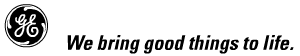

|
 Gabriel Kron and the Negative Resistor
At the time of his death, Gabriel Kron was arguably the greatest electrical scientist ever produced by the United States. It appears that the availability of this Heaviside energy component surrounding any portion of the circuit may be the long sought secret to Gabriel Kron's “open path” that enabled him to produce a true negative resistor in the 1930s, as the chief scientist for General Electric on the U.S. Navy contract for the Network Analyzer at Stanford University. Kron was never permitted to release how he made his negative resistor, but did state that, when placed in the Network Analyzer, the generator could be disconnected because the negative resistor would power the circuit. Since a negative resistor converges surrounding energy and diverges it into the circuit, it appears that Kron's negative resistor gathered energy from the Heaviside component of energy flow as an “open path” flow of energy — connecting together the local vicinities of any two separated circuit components — that had been discarded by previous electrodynamicists following Lorentz. Hence Kron referred to it as the “open path.” Particularly see Gabriel Kron, “The frustrating search for a geometrical model of electrodynamic networks,” circa 1962. We quote:
A true negative resistor appears to have been developed by the renowned Gabriel Kron, who was never permitted to reveal its construction or specifically reveal its development. For an oblique statement of his negative resistor success, see Gabriel Kron, “Numerical solution of ordinary and partial differential equations by means of equivalent circuits,” Journal of Applied Physics, Vol. 16, Mar. 1945a, p. 173. Quoting: “When only positive and negative real numbers exist, it is customary to replace a positive resistance by an inductance and a negative resistance by a capacitor (since none or only a few negative resistances exist on practical network analyzers).” Apparently Kron was required to insert the words “none or” in that statement. See also Gabriel Kron, “Electric circuit models of the Schrödinger equation,” Phys. Rev. 67(1-2), Jan. 1 and 15, 1945, p. 39. We quote: “Although negative resistances are available for use with a network analyzer,…”. Here
the introductory clause states in rather certain terms that
negative resistors were available for use on the network
analyzer, and Kron slipped this one through the censors.
It may be of interest that Kron was a mentor of Sweet, who
was his protégé. Sweet
worked for the same company, but not on the Network Analyzer
project. However, he almost certainly
knew the secret of Kron's “open path” discovery
and his negative resistor. Pooh-poohing the Kron negative resistor is just sheer naïveté. Kron was one of the greatest electrical scientists of all time, and applied full general relativity to rotating machines, electrical circuits and generators, etc. Simply go check his papers in the literature. Even today, there are few electrodynamicists really able to fully comprehend his advanced work. And his direct quotations from his own published technical papers in the literature leave no doubt he had made a negative resistor. Further, other scientists have commented on Kron's discovery of the “open path” connecting any two points in a circuit, and usable to provide energy transfer at will. The mechanism by which he did this is what Kron was never allowed to reveal. Excerpted from “On Extracting Electromagnetic Energy from the Vacuum,” IC-2000, by Tom Bearden. |